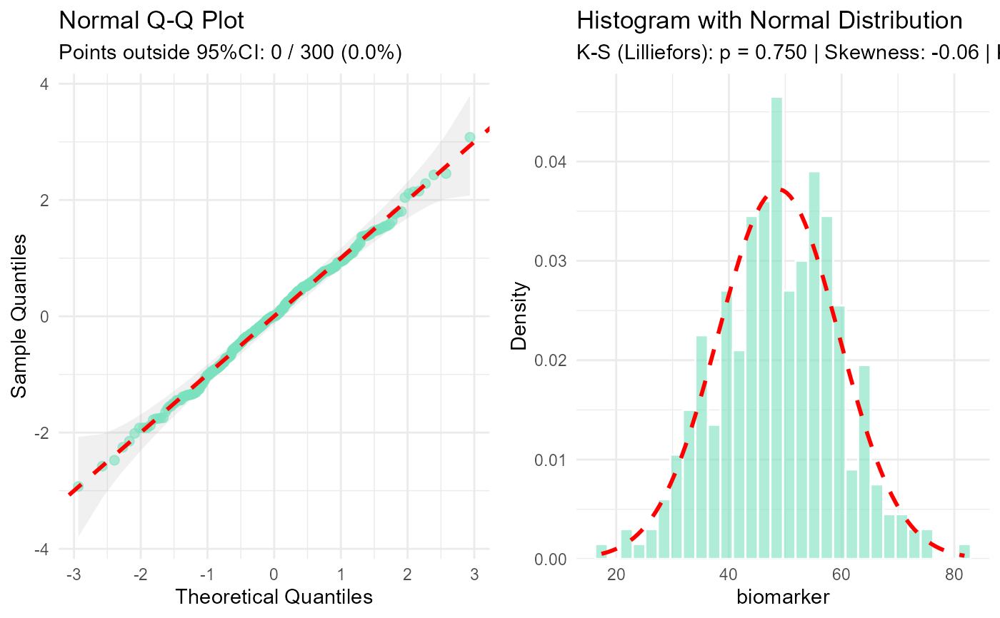
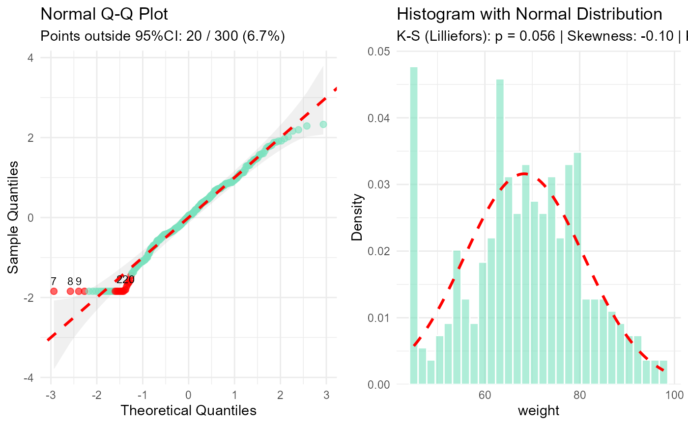

Tests normality using sample size-appropriate methods: Shapiro-Wilk test (n less than or equal to 50) or Kolmogorov-Smirnov test with Lilliefors' correction (n greater than 50) with Q-Q plots and histograms. Evaluates skewness and kurtosis using z-score criteria based on sample size. Automatically detects outliers and provides comprehensive visual and statistical assessment.
Usage
normality(data, x, all = FALSE, color = "#79E1BE")
# S3 method for class 'normality'
print(x, ...)References
Mishra P., Pandey C.M., Singh U., Gupta A., Sahu C., and Keshri A. Descriptive statistics and normality tests for statistical data. Ann Card Anaesth. 2019 Jan-Mar;22(1):67-72. doi: 10.4103/aca.ACA_157_18. PMID: 30648682; PMCID: PMC6350423.
Lilliefors, H.W. (1967). On the Kolmogorov-Smirnov test for normality with mean and variance unknown. Journal of the American Statistical Association, 62(318), 399-402. doi: 10.1080/01621459.1967.10482916
Dallal, G.E. and Wilkinson, L. (1986). An analytic approximation to the distribution of Lilliefors' test for normality. The American Statistician, 40(4), 294-296. doi: 10.1080/00031305.1986.10475419
Examples
# Simulated clinical data
clinical_df <- clinical_data()
# Normally assesment of numerical variable
normality(clinical_df, "biomarker")
#>
#> Normality Test for 'biomarker'
#>
#> n = 300
#> mean (SD) = 48.79 (10.7)
#> median (IQR) = 48.82 (14.8)
#>
#> Kolmogorov-Smirnov (Lilliefors): D = 0.030, p = 0.750
#> Shapiro-Wilk: W = 0.997, p = 0.922
#> Skewness: -0.06 (z = -0.40)
#> Kurtosis: -0.06 (z = -0.22)
#>
#> Data appears normally distributed.
#>

# Normally assesment of numerical variable with points outside 95% CI displayed
normality(clinical_df, "weight", all = TRUE)
#>
#> Normality Test for 'weight'
#>
#> n = 300
#> mean (SD) = 68.29 (12.6)
#> median (IQR) = 68.90 (16.4)
#>
#> Kolmogorov-Smirnov (Lilliefors): D = 0.051, p = 0.056
#> Shapiro-Wilk: W = 0.979, p < 0.001
#> Skewness: -0.10 (z = -0.69)
#> Kurtosis: -0.52 (z = -1.84)
#>
#> Data appears normally distributed.
#>
#> VALUES OUTSIDE 95% CI (row indices): 7, 8, 9, 49, 221, 222, 247, 248, 249, 292, 293, 294, 45, 220, 44, 217, 219, 150, 43, 133
#>
